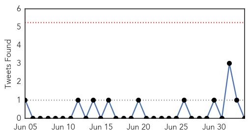

Unknown
30-Day Web Trend
0 alerts, 0 warnings

30-Day Twitter Trend
0 alerts, 0 warnings

Article Locations


Article Confidences

Top Articles:
- 0.964
- European Commission fails to offer any proposal on African swine fever control
- 0.960
- Filipinos urged to delay hajj over MERS
- 0.939
- Veterinary department trains guns on fowl after pigs cleared of JE
- 0.937
- The Daily Reflector
- 0.917
- Chicago Tribune
- 0.917
- Chicago Tribune
- 0.917
- Chicago Tribune
- 0.917
- Chicago Tribune
- 0.897
- Misery, and mysteries, persist
- 0.881
- 'Anthrax Infected Beef' Leaves Five Hospitalised
- 0.874
- These pests can carry disease
- 0.866
- Ukraine's parliament gives preliminary approval to gov't energy proposals
- 0.859
- Saudi MERS: Philippines urges its Muslims to abort Hajj - Regional
- 0.859
- Tuberculosis Levels in Russia and Belarus 'Disaster,' WHO Says
- 0.856
- Sudan Vision Daily
- 0.852
- Crow Wing County Community Services issues tick-borne illness alert
- 0.815
- Philippines urges its Muslims to abort Hajj
- 0.809
- Philippines urges Muslims to abort Hajj
- 0.791
- Tests clear Penang pig farms of carrying Japanese Encephalitis virus
- 0.788
- Health Department finds tularemia in rabbit in Fort Collins
- 0.786
- Over 50 take ill after drinking contaminated water
- 0.779
- A dig at Zimbabwe’s untrusted waters
- 0.767
- WHO Aims at Eliminating Tuberculosis in 33 Countries With Low Levels of the Disease
- 0.734
- Add chapter on rabies, say experts
- 0.725
- Anthrax discovered in beef in Hungary
- 0.717
- Samples from Penang pig farms free of JE
- 0.711
- Beware of Lyme disease while out this summer
- 0.672
- Medical sector upgrades to prepare for AEC
- 0.640
- Latvian Saeima declares state of emergency in area hit by swine-fever outbreak :: The Baltic Course
- 0.637
- Latvia may declare state of emergency to cope with African swine fever
- 0.636
- Deadly anthrax disease 'discovered in Hungarian beef'
- 0.627
- On its sixth day running, U.A.E. Water Aid provides clean drinking water for 3.444 million peopleUAE
- 0.619
- Foster Farms Recalls Salmonella Tainted Chicken
- 0.615
- No JE virus detected in blood samples - Nation
- 0.610
- Horse Virus Found in WY, Shouldn't be Concern for CFD
- 0.606
- Syria and neighbouring countries: Water shortages add to woes - Syrian Arab Republic
- 0.603
- Syria and neighbouring countries: Water shortages add to woes
- 0.601
- Let’s ask Dr. Google!
- 0.574
- Hungary probes suspected anthrax infection
- 0.564
- Province providing free water testing for private water supplies
- 0.555
- TASS: Business & Economy
- 0.546
- 6 people hospitalized with anthrax poisoning in Hungary
- 0.541
- Tax exile Depardieu to open ‘Gérard’ restaurant in Moscow
- 0.541
- Grief, rage as Palestinians bury slain teen
- 0.541
- Iraq’s Maliki vows to 'never give up' on third term bid
- 0.541
- Kurdistan seeks independence referendum amid Iraq unrest
- 0.541
- Germany arrests 'double agent' suspected of spying for US
- 0.541
- Mother stabs teacher to death in French primary school
- 0.541
- France allows employers to ban wine in workplace
- 0.528
- Wet Season Brings Spike In Malaria « Karen News
Showing top 50 articles...
Top Tweets:
-
No tweets found for Jul 04, 2014
Chikungunya
30-Day Web Trend
9 alerts, 7 warnings

30-Day Twitter Trend
0 alerts, 0 warnings

Article Locations


Article Confidences

Top Articles:
- 0.999
- 4 chikungunya cases reported in Boston among travelers to Caribbean
- 0.998
- Caribbean mosquito-borne virus making its way to U.S.
- 0.997
- Chikungunya Mosquito Virus Getting More Attention in the U.S.
- 0.996
- Chikungunya Virus Recorded in Boston After Travelers Return From the Caribbean
- 0.996
- Caribbean Ravaged Due to Rampancy of Virus
- 0.992
- Heavy rainy season in Latin America and the Caribbean could cause significant outbreaks - Dominican Republic
- 0.963
- Chikungunya virus warning for T&T
- 0.950
- State issues health alert on emerging mosquito virus
- 0.933
- This Breed of Mosquito Is Invading the U.S. — And It Could Carry a Terrifying Disease
- 0.926
- Health Check Special Report: Chikungunya
Top Tweets:
-
No tweets found for Jul 04, 2014